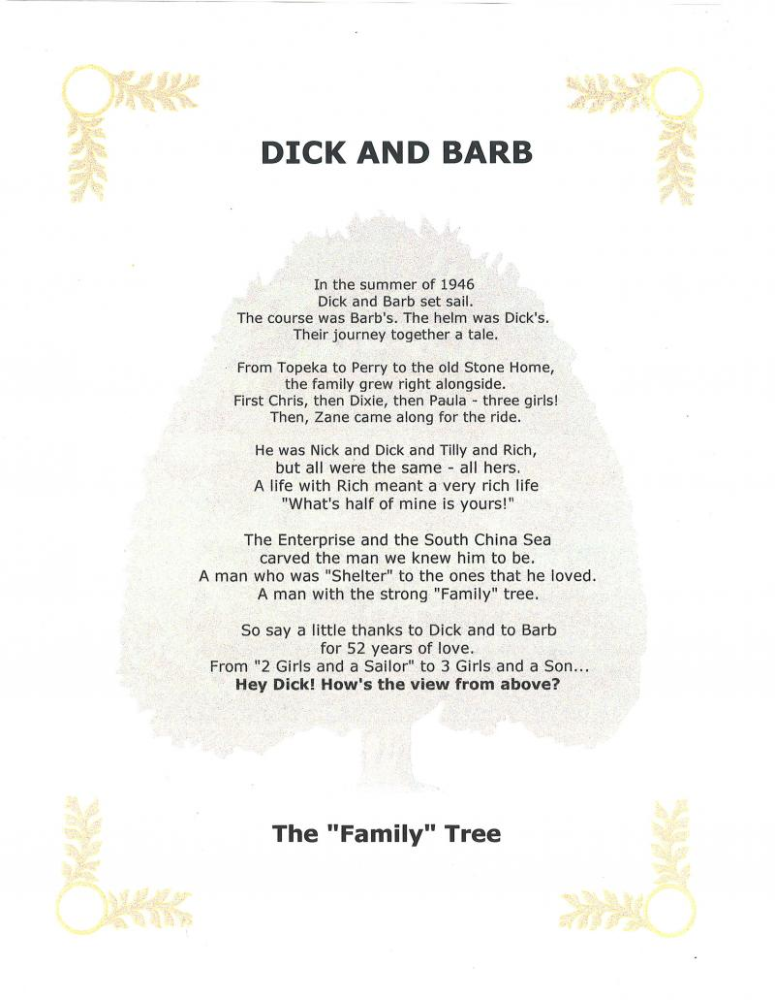

Martin Manley: My Life and Death
Born 8-15-53, Died 8-15-13 , Age 60
- Home Page
- January 1, 2012
- June 11, 2012
- Suicide Preface
- Why Suicide?
- Why not?
- Why Age 60?
- Self-Serving?
- Suicide - How 2
- Gun Control
- Other Suicides
- Other Quotes
- ------------------------------------
- Growing Up
- OMG: I look 60!
- Mom and Dad
- The Heavens
- My Religion
- Chancel Choir
- Victory O Lord
- The Proposal
- Two Marriages
- First Two Loves
- Pictures
- Trips and Travel
- Writing Fiction
- Music & Poetry
- Movies & TV
- Health
- Sleep Deprived
- Living Donor
- Food & Drink
- Creations
- Sports
- KC Star
- KC Tornado
- My IQ
- Synesthesia
- Poker
- Legal
- JOCO, Ks.
- U.S. Financial
- 911 & Conspiracies
- COOL STUFF
- Births & Deaths
My Poetry
I'm no poet and I know it.
Nevertheless, I've written a few poems that I happen to like. See what you think.
This is the first poem that I ever remember writing.
Old Saint Nick (1966, Age 13)
One Christmas Eve when I was sick
I looked out my window and saw Saint Nick
I ran to my bed and closed my eyes
And, down through the chimney the old man arrives
I peeked through the door and Santa Clause said
You little sick boy, please stay in bed
Five minutes later I woke back up
And, there beside me lay a pup
I could hardly sleep until Christmas day
Even my dreams would keep me awake
But, Christmas morn came and I felt so much better
I could not wait to write Nick a letter
From that day on all I could see
Was Old St. Nick on that Christmas Eve.
----------------------------------------------------------------------------
The next poem is one I wrote a few months after breaking up with my college girlfirend.
Maybe... (1973, Age 20)
Strange sensations envelope my curiosity, it seems.
I'm curious about my feelings, about my dreams.
What is love? Who does it affect? How long does it last?
Can love be measured by distance or in an hourglass?
Perhaps my visions are just illusions of my mind
Of something I secretly want or silently desire.
Perhaps not however, perhaps love.
Perhaps it still remains through time and distance.
Likely my thoughts are just images,
Shadows, ghosts of reality.
Or maybe just passing glances at fading memories.
By chance not however, by chance love.
By chance it still remains through time and distance.
I have but one hope -- one aspiration.
That my spirit might see vividly the turth.
That surely my conception of this love is
Merely the representation of something else.
But yet there looms in the heart of my being
As if given strength by some unknown force
An entire compelling emotion, an unquestionable sensation
So genuine and authentic that it must be love.
Yet overshadowed so gravely that my feelings
Are nothing more than a recollection of events
Which have, are, and shall always elude me.
I sense not however, I sense love.
I sense it still remains through time and distance.
----------------------------------------------------------------------------
This next poem was originally part of a song, but the melody got lost in one of my waves of exiting brain cells and so I simply shortened it to the refrain and called it a poem.
Because Me Without You (1977, age 24)
I don’t want you to leave
I don’t want you to go
-----
Because me without you
Is like a deer without a doe
It’s like a song without a tune
Or a firefly without a glow
It’s like a “honey” without a “moon”
Or a “mistle” without a “toe”
I don’t want you to leave
I don’t want you to go
-----
Because me without you
Is like a one without a two
It’s like a him without a her
Or a boy without a girl
It’s like a groom without a bride
Or a husband without a wife.
----------------------------------------------------------------------------
This poem was one I wrote when I signed up for Matchmaker after my second divorce. There was a pretty woman's picture on one of the profiles and I just had to meet her. I changed her name (handle) to protect the innocent.
One Face In A Thousand (1998, Age 44)
Morning comes soon and I pry open my eyes
Though your face I can still plainly see.
The Sandman and Tooth Fairy have said their goodbyes,
But your face still lingers with me.
You're a vision to see, like a photograph still
From a dream that was blissfully blind.
Your picture so perfect, it cannot be real.
Your image stays burned in my mind.
But I wake, as I must, and I go on my way
And, I try to forget where I've been.
But, my mouse has a mind of its own everyday,
So, I'm reminded again and again.
Though try as I might - and I fight the good fight
I just can't forget - I can't win.
For winning means losing if I give up the sight
Of a twelve on a face-scale of ten.
As night finally comes and my eyes finally close
I welcome back all of my friends.
The Sandman and Tooth Fairy each strike up their pose.
Then the face that turns boys into men.
Yes, Mary is pretty and Jaclyn is fine
And, Connie is beautiful too!
But, Sheena was tops till the second in time,
That I clicked Kathy242!
There never has been, nor will ever be
A man so committed as I
To gaze on the face of the girl in my dreams
In person just once 'fore I die!
----------------------------------------------------------------------------
Being somewhat of a pessimist, I once gave myself the challenge of coming up with one thing that represented optimism. As it turns out, it's obvious.
The Balloon (2002, Age 49)
The image of a balloon is one of color - reds, greens, blues and yellows.
It accompanies fun, reward, anniversary, rally, newness, adventure and celebration.
It rises to the heavens as it flies above the clouds.
It knows no boundaries as it dances to the wind.
It captures our imagination while it offends no soul.
But, most of all it brings a smile to the child who holds it...
...whether black or white or brown.
And, that is the best reason why a simple balloon best symbolizes optimism...
... because our children are our best hope.
----------------------------------------------------------------------------
This last poem is easily my favorite. Shortly after my first divorce, my ex-stepfather (Dick Tillman) died of a heart attack on May 24, 1998 at the age of 73. One minute, he's on top of the world, the next minute he's no longer part of the world. The truth is that his death was relatively hard for me - almost equivalent to my own parents. And, being there one moment and unexpectedly gone the next is one of the reasons I decided I couldn't let that happen to me.
Right after he died, I wrote this poem, put it in a frame and gave it to my ex-mother-in-law - a wonderful woman (Barb Tillman). I tried to incorporate all I could from the family to put into the poem.
The "What's half of mine is yours!" reference was a classic sort of anti-Shakespeare thing that Dick used to love to do. He would take a candy bar (for instance), cut it in half and hand half to Barb and say "What's half of mine is yours." Then, he would reach over and take her half and cut it in half again and keep one of those two halves (meaning he ended up with 3/4) and say "What's half of yours is mine." I always thought that was so cute.
Dick served on The Enterprise in WWII and he was known by the term "Shelter" because the family knew he would always protect them.
And, finally, the "2 Girls and a Sailor" reference is to the movie from 1944 which was their first date.
DICK AND BARB (1998, Age 44)

Copyright 2013 Martin Manley Life and Death. All rights reserved.